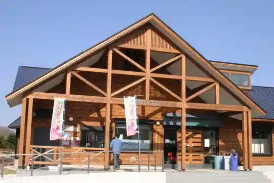
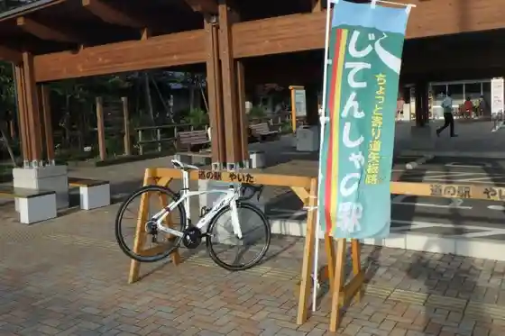
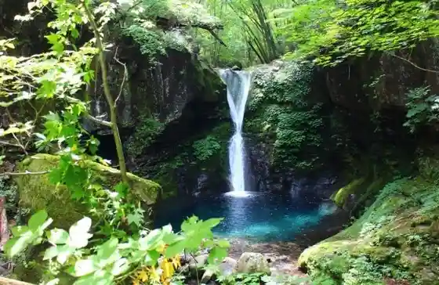
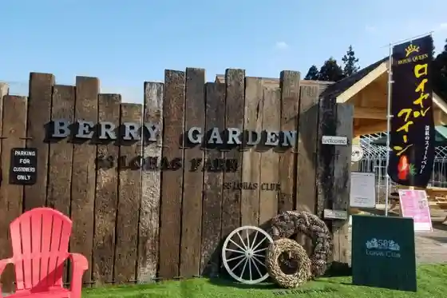

Yaita Onsen Guranpingu yulampi (Yuranpi)
Yaita, Tochigi · 0287-43-8800 · Official / source link
Yama no Eki Takahara
Yaita, Tochigi · 0287-43-1515 · Official / source link

Jitensha no Eki
Yaita, Tochigi · 0287-43-6211 · Official / source link

Oshiraji Falls
Yaita, Tochigi · 0287-43-6211 · Official / source link

58 Rohasu Club BERRY GARDEN
Yaita, Tochigi · 0287-41-0058 · Official / source link

Yama no Eki Takahara (Star Light Camp Base)
Yaita, Tochigi · 0287-43-1515 · Official / source link
Kenmin Forest Campground
Yaita, Tochigi · 0287-43-0479 · Official / source link
Yaita no Ringo Sono
Yaita, Tochigi · 0287-44-2312 · Official / source link
Arai Ie Jutaku (Yaita)
Yaita, Tochigi · 0287-43-3586 · Official / source link
Kinsei Kawa no Masu Ike
Yaita, Tochigi · 0287-43-9292 · Official / source link
Happogahara
Yaita, Tochigi · 0287-43-6211 · Official / source link
Shiro no Yu Yasuragi Village
Yaita, Tochigi · 0287-44-1010 · Official / source link
Morito Shuzo
Yaita, Tochigi · 0287-43-0411 · Official / source link
Tomikawa Shuzo Mise
Yaita, Tochigi · 0287-48-1510 · Official / source link
Miyagawa Gorge
Yaita, Tochigi · 0287-43-6211 · Official / source link
Aka Taki
Yaita, Tochigi · 0287-43-0272 · Official / source link
Terayama Dam
Yaita, Tochigi · 0287-43-5431 · Official / source link
Tochigiken Kenmin Forest
Yaita, Tochigi · Official / source link
Yama Kyu Chiizufakutorii
Yaita, Tochigi · 0287-44-3335 · Official / source link
Koeki Zaidanhojin Yamagata Aritomo Memorial Museum
Yaita, Tochigi · 0287-44-2320 · Official / source link
Roadside Station Yaita
Yaita, Tochigi · 0287-43-1000 · Official / source link
Kasho
Yaita, Tochigi · 0287-43-0340 · Official / source link
Yaita Takeshi Memorial Museum
Yaita, Tochigi · 0287-43-0032 · Official / source link
Kawasaki Castle Ruins
Yaita, Tochigi · 0287-43-6213 · Official / source link
Tomonarisoba Tokoro Nobuo Iori
Yaita, Tochigi · 0287-43-4466 · Official / source link
Yaita Satoyama Ichigo Sono
Yaita, Tochigi · 0287-48-7040 · Official / source link
Omae Hara Castle Ruins
Yaita, Tochigi · 0287-43-6211 · Official / source link
Sawa Kan'onji
Yaita, Tochigi · 0287-44-0548 · Official / source link
Yaita Kita PA (Kudari)
Yaita, Tochigi · 0287-43-1382 · Official / source link
Yaita Kita PA (Nobori)
Yaita, Tochigi · 0287-44-1078 · Official / source link
Appuru Kare
Yaita, Tochigi · 0287-43-0272 · Official / source link
Kashi Tokoro Ki Village Ya
Yaita, Tochigi · 0287-48-0905 · Official / source link
Kappo Matsushima Main Shop
Yaita, Tochigi · 0287-43-0126 · Official / source link
Terayama Kan'onji (Yaita)
Yaita, Tochigi · 0287-44-1447 · Official / source link
Kawasaki Castle Ruins Park (Yaita)
Yaita, Tochigi · 0287-43-6211 · Official / source link
Nagamine Park
Yaita, Tochigi · 0287-43-6211 · Official / source link
Kohata Shrine
Yaita, Tochigi · 0287-43-6211 · Official / source link
Hotel Ueriisumiyoshi
Yaita, Tochigi · 0287-43-0013 · Official / source link
Terayama Kosen
Yaita, Tochigi · 0287-43-3773 · Official / source link
Otaki Kosen
Yaita, Tochigi · 0287-43-0941 · Official / source link
Aka Taki Kosen
Yaita, Tochigi · 0287-43-0940 · Official / source link
Yaita Onsen Makoto Baths (Higaeri Onsen)
Yaita, Tochigi · 0287-43-8800 · Official / source link
Tai Yaki to Kohii no O Mise An Hime Nagamine Koen Mise
Yaita, Tochigi · 0287-43-7207 · Official / source link